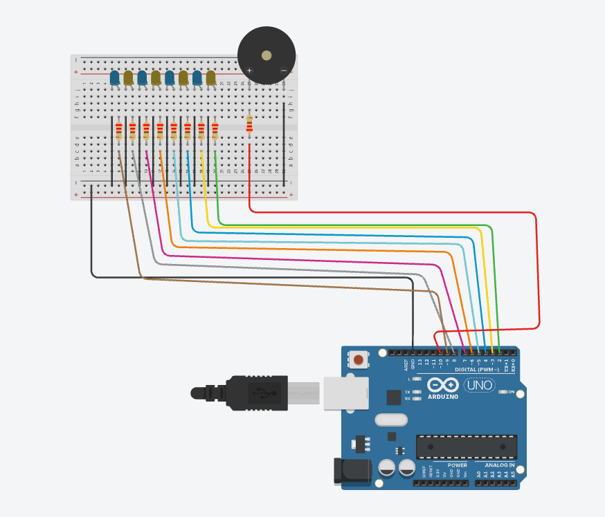

Guía de trabajo
Práctica: Reproducción del Himno de la Alegría con secuencia de luces usando Arduino
Primero completa tus respuestas en esta hoja. Cuando termines, usa el botón para abrir la versión de impresión y guardar un PDF con tus propias respuestas.
Propósito de la práctica
Programar un circuito con Arduino Uno, 8 LEDs y un buzzer para reproducir una melodía del Himno de la Alegría, mientras los LEDs se encienden en secuencia conforme avanza cada nota musical.
Aprendizajes esperados
- Identificar el uso de arreglos en Arduino.
- Comprender cómo se controla una secuencia de LEDs.
- Utilizar la función
tone()para generar sonidos con un buzzer. - Relacionar una nota musical con una duración específica.
- Analizar cómo se sincronizan luz y sonido en un programa.
Materiales
- 1 Arduino Uno
- 1 protoboard
- 8 LEDs
- 8 resistencias de 220 Ω
- 1 buzzer
- Cables Dupont
- 1 cable USB
- Computadora con Arduino IDE
Descripción general del circuito
- Los 8 LEDs están conectados a los pines 2, 3, 4, 5, 6, 7, 8 y 9.
- El buzzer está conectado al pin 10.
- Cada LED tiene una resistencia para protegerlo.
- El programa reproduce la melodía y en cada nota se enciende un LED distinto.

Instrucción para ingresar a Tinkercad
- Abre tu navegador de internet (Chrome, Edge o Firefox).
- Ingresa a la siguiente dirección:
https://www.tinkercad.com. - Haz clic en Iniciar sesión (Sign in).
- Selecciona una de estas opciones para entrar: Cuenta de Google, Cuenta de Microsoft o Cuenta de Autodesk.
- Una vez dentro de la plataforma, entra a la sección Circuits (Circuitos).
- Presiona el botón Create new Circuit (Crear nuevo circuito).
- Dentro del simulador podrás agregar un Arduino Uno, insertar LEDs, colocar resistencias, conectar buzzer y escribir el código del programa.
- Finalmente presiona Start Simulation para ejecutar el circuito y verificar que funcione correctamente.
Indicaciones importantes:
- Guarda tu proyecto con el nombre:
HimnoAlegria_Arduino_TuNombre. - Verifica que los LEDs enciendan en secuencia.
- Comprueba que el buzzer reproduzca la melodía y que el circuito no tenga errores de conexión.
Conceptos previos
1. ¿Qué es un arreglo?
Un arreglo es una estructura que permite guardar varios valores en una sola variable.
int leds[] = {2, 3, 4, 5, 6, 7, 8, 9};Aquí se almacenan los pines donde están conectados los LEDs.
2. ¿Qué hace tone()?
La función tone(pin, frecuencia) genera un sonido en el buzzer según la frecuencia indicada.
tone(buzzer, 262);Esto hace que el buzzer reproduzca una nota musical.
3. ¿Qué hace noTone()?
Detiene el sonido que se está reproduciendo en el buzzer.
4. ¿Qué es millis()?
millis() devuelve el tiempo transcurrido desde que inició el programa. Sirve para controlar tiempos sin detener completamente el código.
Código de la práctica
int leds[] = {2, 3, 4, 5, 6, 7, 8, 9};
int buzzer = 10;
int melody[] = {
262, 262, 294, 330, 330, 294, 262, 247, 220,
220, 247, 262, 262, 247, 247,
262, 262, 294, 330, 330, 294, 262, 247, 220,
220, 247, 262, 247, 220, 220
};
int durations[] = {
400, 400, 400, 400, 400, 400, 400, 400, 600,
400, 400, 400, 400, 600, 600,
400, 400, 400, 400, 400, 400, 400, 400, 600,
400, 400, 400, 600, 600, 800
};
int currentNote = 0;
unsigned long previousMillis = 0;
bool notePlaying = false;
void setup() {
for (int i = 0; i < 8; i++) {
pinMode(leds[i], OUTPUT);
}
pinMode(buzzer, OUTPUT);
}
void loop() {
unsigned long currentMillis = millis();
if (currentNote < sizeof(melody) / sizeof(melody[0])) {
if (!notePlaying) {
tone(buzzer, melody[currentNote]);
int ledIndex = currentNote % 8;
for (int i = 0; i < 8; i++) {
digitalWrite(leds[i], i == ledIndex ? HIGH : LOW);
}
previousMillis = currentMillis;
notePlaying = true;
}
if (notePlaying && currentMillis - previousMillis >= durations[currentNote]) {
noTone(buzzer);
currentNote++;
notePlaying = false;
}
} else {
for (int i = 0; i < 8; i++) {
digitalWrite(leds[i], LOW);
}
noTone(buzzer);
currentNote = 0;
notePlaying = false;
}
}Desarrollo de la práctica
Parte 1. Observación del circuito
Observa el diagrama de conexión e identifica cuántos LEDs hay, qué pin usa el buzzer, qué función cumplen las resistencias y dónde está conectado GND.
Parte 2. Análisis del código
Parte 3. Relación entre música y luces
Parte 4. Comprensión de instrucciones
Parte 5. Modificaciones guiadas
Parte 6. Tabla de análisis
| Elemento | Función en la práctica |
|---|---|
| Arduino Uno | |
| LED | |
| Resistencia | |
| Buzzer | |
Arreglo melody[] | |
Arreglo durations[] | |
millis() |
Parte 7. Reflexión final
Conclusión
Reto adicional
- Agregar más notas para alargar la canción.
- Hacer que los LEDs parpadeen al ritmo.
- Encender todos los LEDs al final de la melodía.
- Cambiar el programa para reproducir otra canción.
Firma de revisión
Profesor: ____________________________________
Observaciones: ________________________________________________